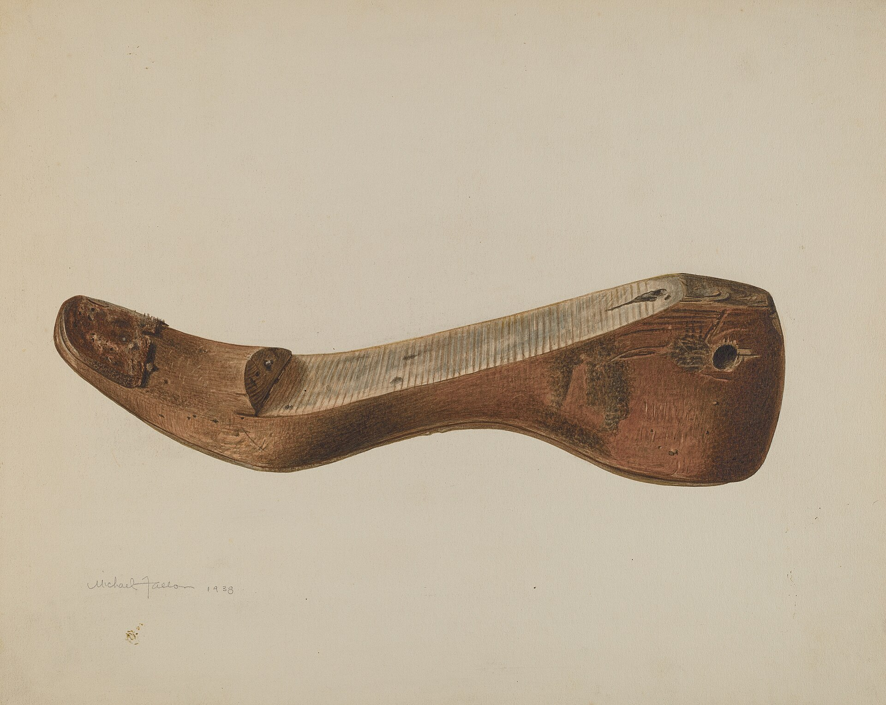
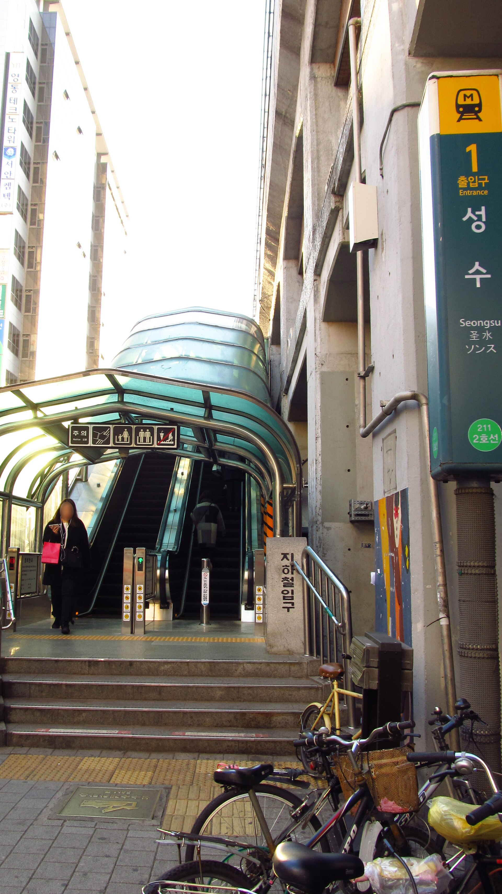
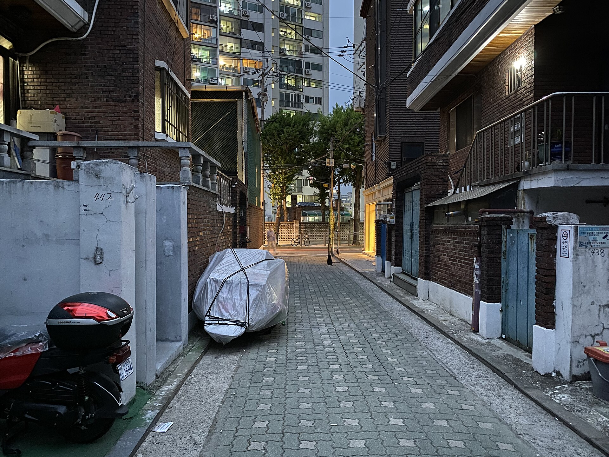
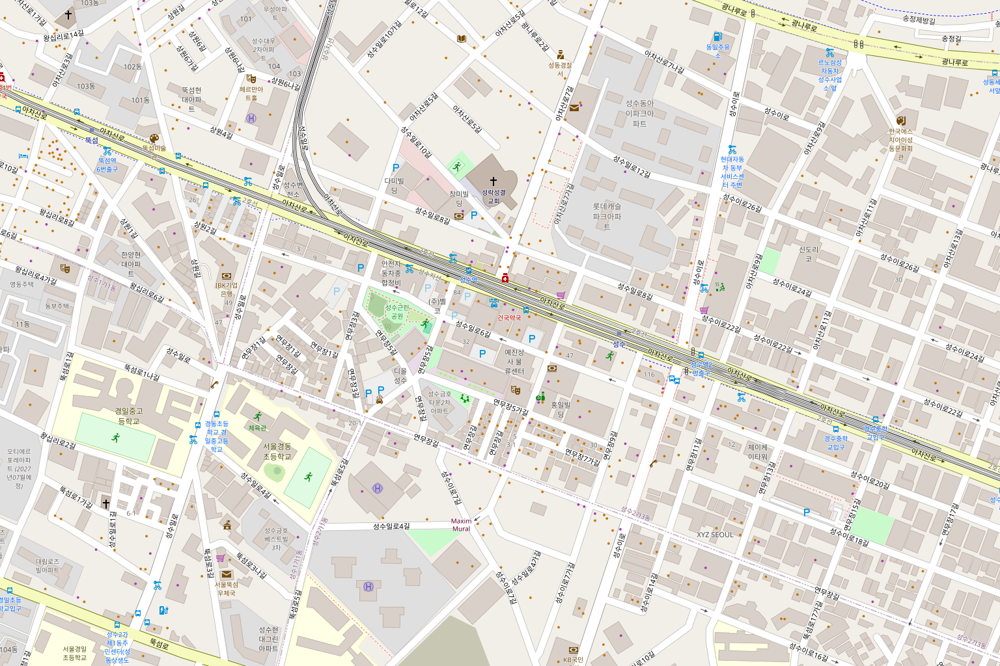
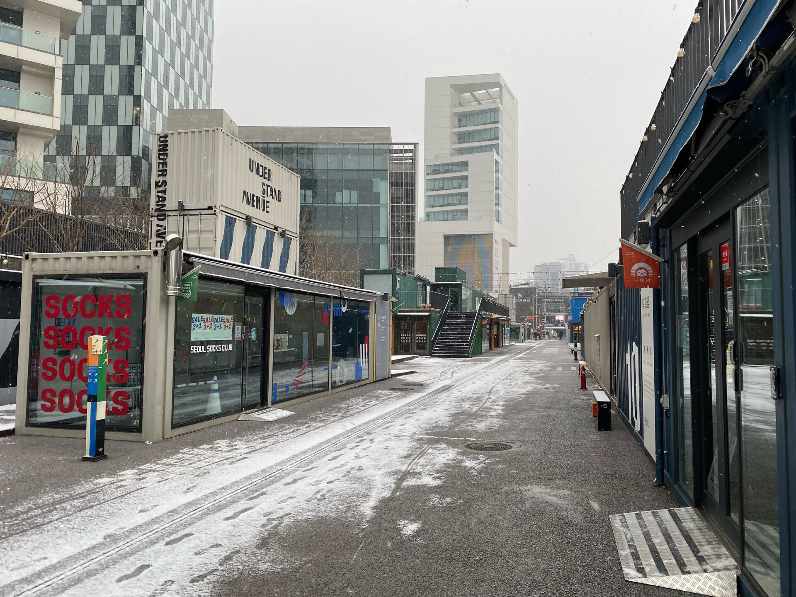
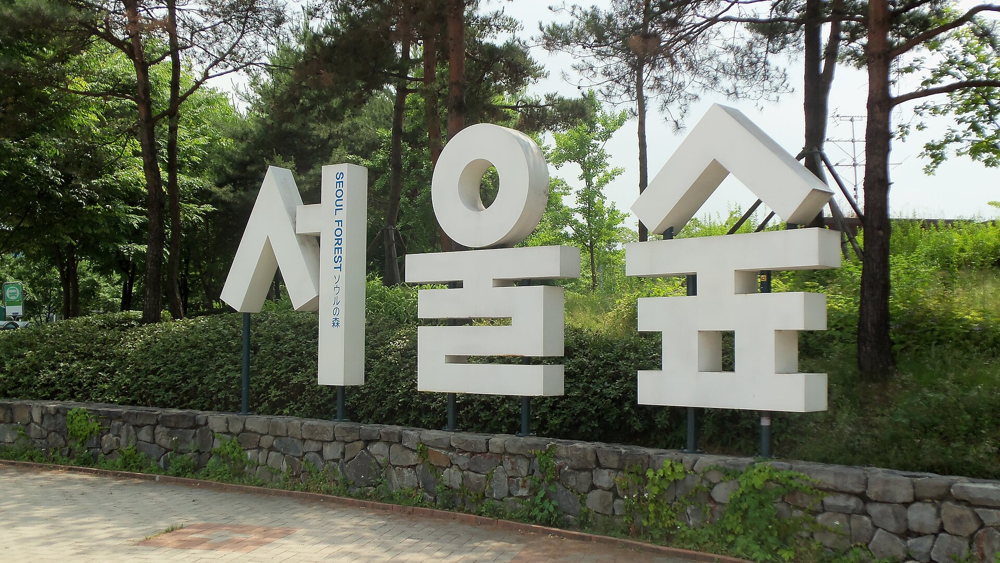

구두 공방이던 자리
1987년부터 구두골   
열여덟 자리, 긴 테이블 하나, 창가 바 여섯 석. 원두는 매주 화요일 가게 안쪽에서 볶습니다.
성수동 수제화 골목, 1987년부터 구두 공방이던 자리에서 커피를 내리고 빵을 굽습니다.
화–금 08:00–19:00, 토·일 10:00–20:00. 월요일은 쉽니다.
| 월요일 | 휴무 |
|---|---|
| 화요일 | 08:00 – 19:00 |
| 수요일 | 08:00 – 19:00 |
| 목요일 | 08:00 – 19:00 |
| 금요일 | 08:00 – 19:00 |
| 토요일 | 10:00 – 20:00 |
| 일요일 | 10:00 – 20:00 |
서울 성동구 연무장길 41-1, 1층

라스트 성수역잔은 가져가셔도 됩니다. 다음에 오실 때 돌려주시면 500원을 빼 드려요.

